병목은 코드가 아니라 프로세스예요
이 영상은 Anthropic이 공개한 'AI Native SDLC Playbook'을 15분 안에 훑어 줘요. SDLC(Software Development Life Cycle)가 낯설다면 먼저 그림부터 보면 돼요. 가운데 SDLC를 두고 계획, 설계, 빌드, 테스트, 배포, 유지보수 여섯 칸이 원을 그려요. 왼쪽 위 유지보수 칸에만 주황 테두리가 있는데, 유지보수가 끝나면 다음 기능이나 버그를 들고 다시 계획으로 돌아간다는 뜻이에요.
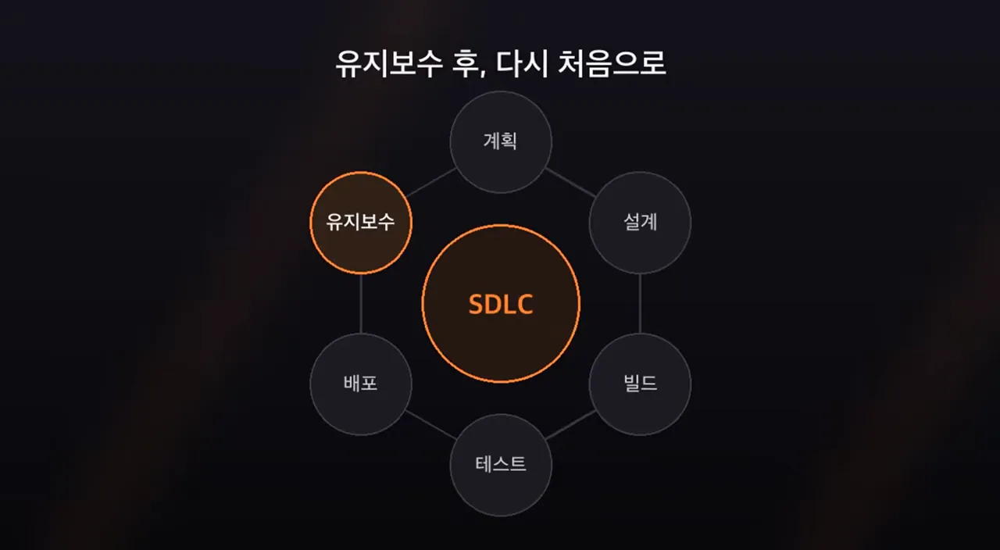
이 문서가 내세우는 주장은 한 줄이에요. 슬라이드에서 주황색으로 강조한 부분이 '여러분의 프로세스'라는 점을 눈여겨보면 돼요.
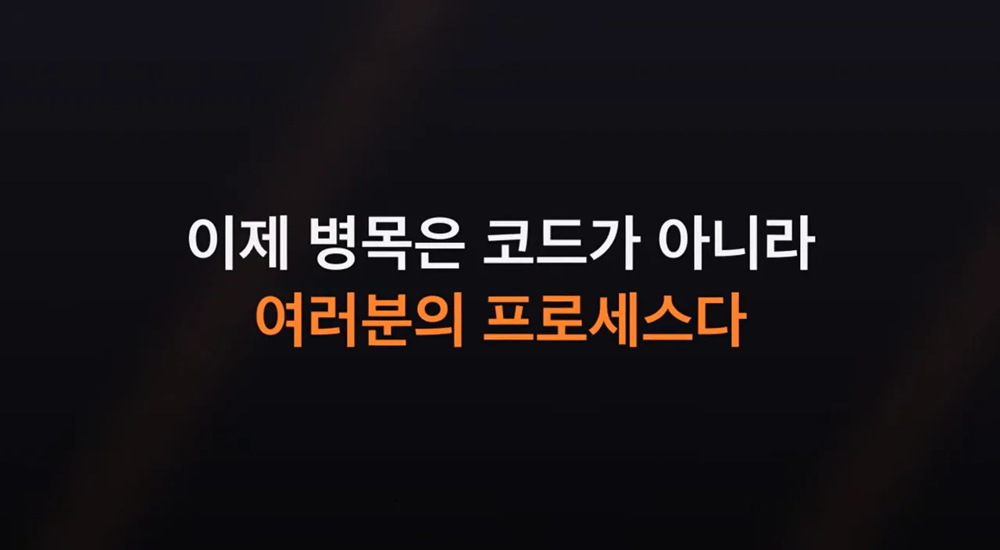
빌드가 줄자 나머지가 드러났어요
예전에는 여섯 단계 중 빌드가 시간도 가장 오래 걸리고 돈도 가장 많이 들었어요. 에이전트가 오면서 그 구간이 확 줄었죠. 아래 슬라이드는 여섯 칸 중 빌드만 주황으로 칠하고, 그 아래에 '빌드는 두 배 빨라졌다 — 그럼 나머지는?'이라고 적었어요. 이 질문이 영상 전체의 뼈대예요.
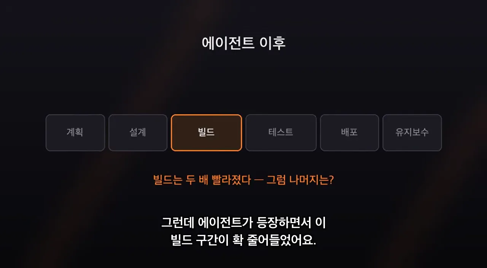
아래 그림은 영상 전체를 한 장으로 모은 거예요. 단계마다 남는 문서와 에이전트가 맡는 일을 적었어요. 유지보수에서 나온 새 intent.md가 다시 계획으로 돌아가는 화살표가 이 문서의 결론이에요.
계획: 에이전트가 나를 인터뷰해요
계획 단계에서 가장 크게 바뀌는 건 질문하는 쪽이에요. 아래 슬라이드 왼쪽은 예전 방식이고, 요구사항을 모으고 문서를 만들고 워크숍을 열고 이해관계자와 회의해요. 오른쪽 주황 글씨의 AI(Artificial Intelligence) 네이티브 방식은 '에이전트가 먼저 나를 인터뷰'하는 데서 시작해요.
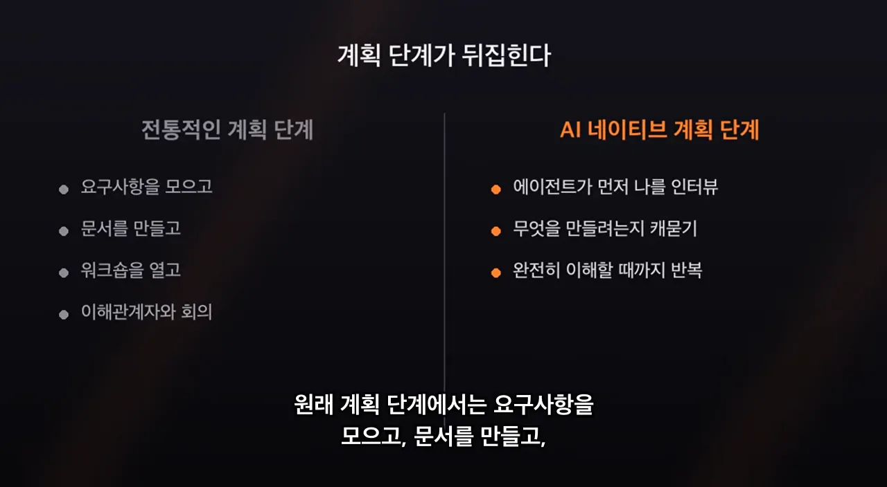
단테도 이렇게 일한다고 해요. 에이전트가 이해할 때까지 계속 질문하게 하고, 자기 경험과 도메인 지식을 대화에 다 쏟아 넣어요. 에이전트는 그 대화에서 핵심 문제를 뽑아 intent.md로 정리해요. 아래 예시는 '다크모드 기능 추가'예요. 설정에서 전환할 수 있어야 하고, 시스템 테마를 기본값으로 따르고, 선택은 기기별로 저장한다는 세 줄이 들어 있어요. 마지막 파란 줄이 이 파일의 성격을 말해 줘요.
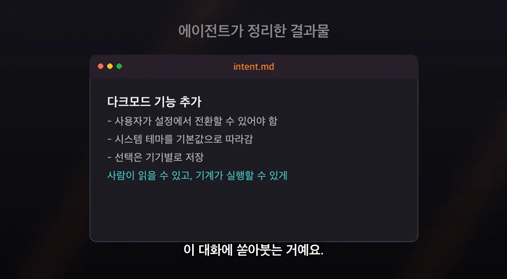
intent.md의 조건이에요. 영상 02:06에서 보기아이디어가 문서로 이어지는 길
예전 SDLC에서 아이디어는 백로그에 들어가 유저 스토리가 되고, 스토리 포인트를 매긴 뒤 담당자에게 넘어갔어요. 아래 슬라이드 오른쪽처럼 AI 네이티브에서는 이슈를 낸 사람이 Claude와 직접 브레인스토밍하고 결과를 바로 intent.md로 남겨요. 중간에 전달하는 사람이 사라지는 거예요.
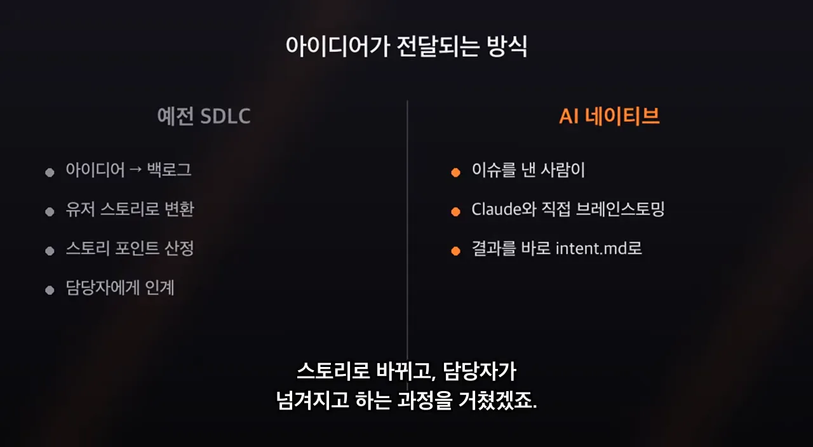
여기서 이어지는 문서 줄을 아티팩트 체인이라고 불러요. 슬라이드의 네 칸을 왼쪽부터 읽으면 intent.md → spec.md → plan.md → 코드·PR이에요. 단계를 넘어갈수록 문서가 하나씩 붙어요.
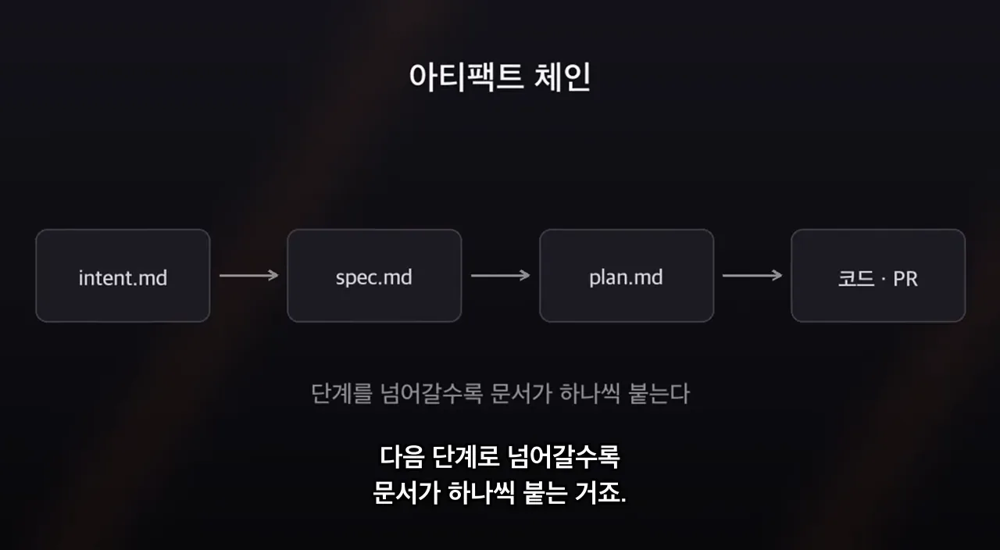
파일은 프로젝트 안에 둬요. 아래 폴더 구조에서 my-project/ 밑에 intent/, spec/, src/가 나란히 있고, intent/ 안에 dark-mode.intent.md와 search-bug.intent.md가 있어요. intent가 쌓이면 이렇게 종류별 접두어를 붙여 구분해요. 파란 줄처럼 Cursor든 Claude Code든 Codex든 방식은 같아요.
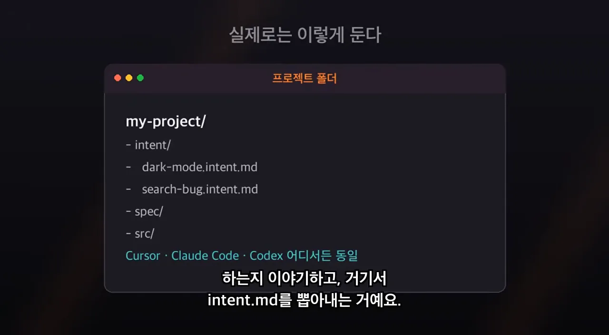
팀마다 다루는 방식은 달라도 돼요. 대신 한 번 정한 방식은 자주 바꾸지 말고 표준으로 삼으라고 해요. 그래야 팀도, 에이전트도, 스킬도 같은 방식으로 굴러가요. 그 위에서 조금씩 키워 가면 돼요.
만든 사람이 끝까지 다듬어요
intent.md는 에이전트가 초안을 쓰고 끝나지 않아요. 아래 슬라이드 가운데 주황 칸처럼 처음 이슈를 낸 원작성자가 다시 돌아와 검토하고 고쳐요. 사람과 에이전트 둘 다 만족할 때까지 반복해요.
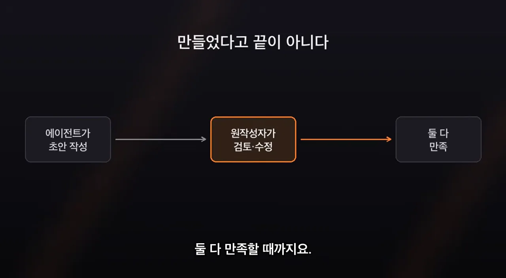
이 원작성자를 오리지네이터라고 불러요. 전문가일 필요는 없어요. 슬라이드의 세 줄처럼 버그를 제보하는 고객, 기능을 제안하는 PM(Product Manager), 프로세스를 고치고 싶은 개발자 누구든 될 수 있어요.
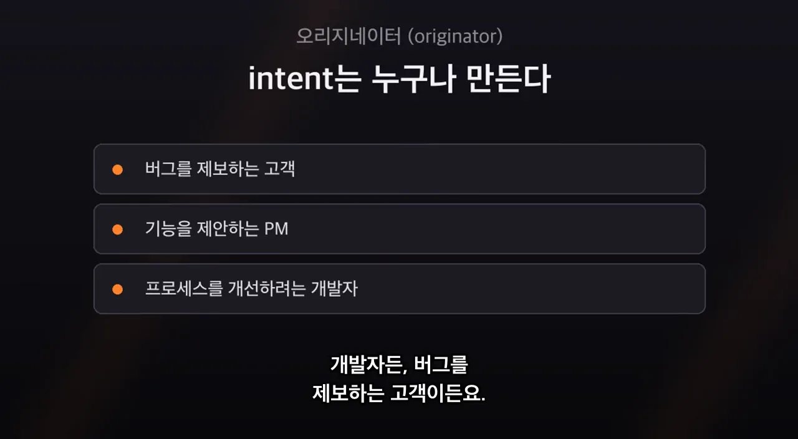
다만 쌓인 intent를 백로그로 정리하고 검토하는 건 프로덕트 오너의 일이에요. 마크다운 파일 하나에 순서대로 적어도 되고, Notion이나 Linear에 모아도 돼요. 단테는 이 백로그 트리아지를 에이전트에게 맡기기도 한대요. 그러면 아래 네 가지 태그를 달아 줘요. 프론트엔드·백엔드 영역, 작업 크기, 기능인지 버그인지, 우선순위예요.
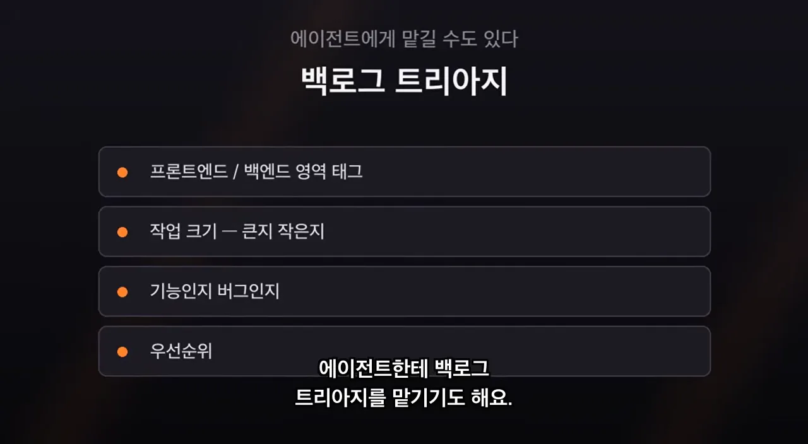
intent에서 spec, spec에서 plan으로
intent가 확정되거나 승인되면 다음은 스펙이에요. 아래 슬라이드의 세 칸처럼 'intent 확정'이 '훅·자동화'를 거쳐 'spec.md 자동 생성'으로 이어져요. 사람이 스펙을 처음부터 쓰지 않고, 정해진 계기에 자동으로 만들어지게 하라는 거예요.
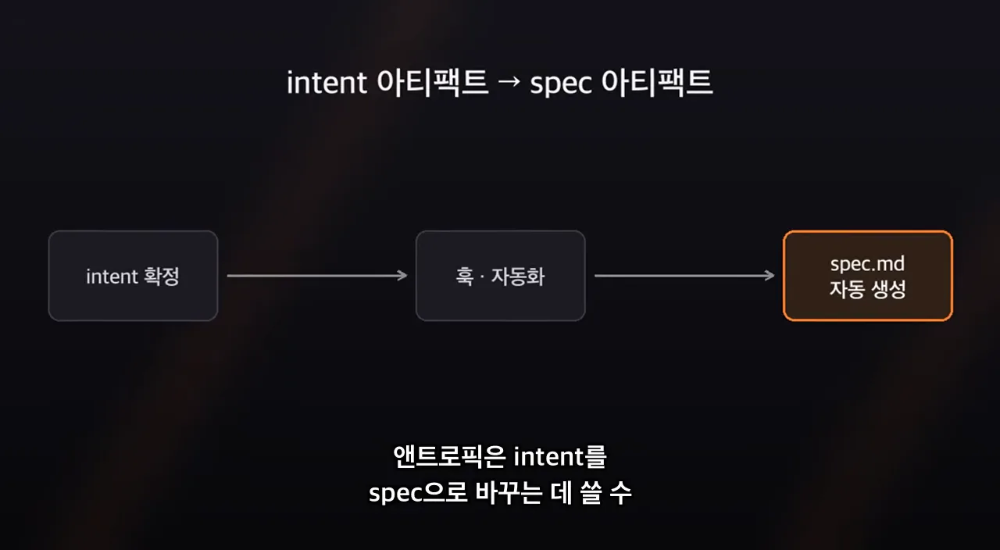
Anthropic은 이 변환에 쓸 샘플 프롬프트도 줘요. 구체적인 스킬까지 주진 않지만, 이걸 바탕으로 직접 스킬을 만들 수 있어요. 창 안의 다섯 줄을 위에서부터 읽으면 이래요. 첨부된 intent.md를 읽고, 요구사항과 설계 스펙을 만들고, 쓸 수 있는 스킬을 적용해 계획하고, 브랜드 가이드라인을 지키고, 마지막으로 전부 spec.md에 문서화하라는 내용이에요.
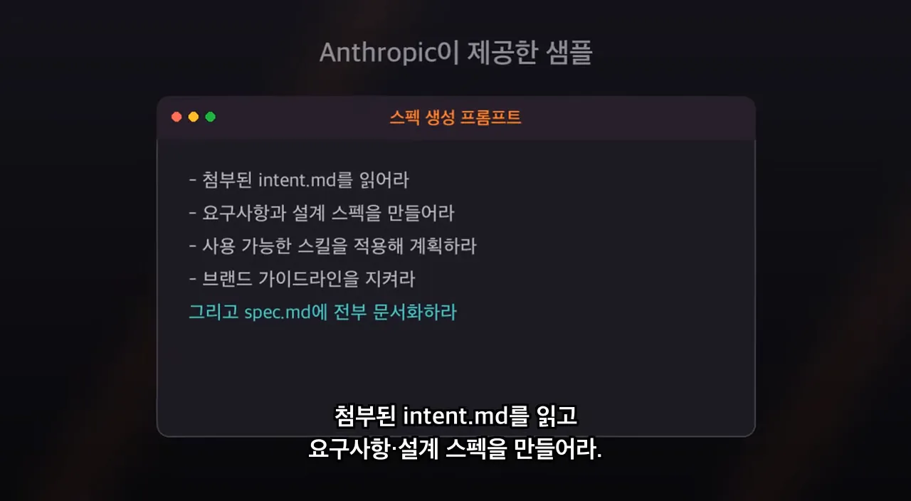
intent.md, 출력은 spec.md로 정해 두는 게 체인을 끊기지 않게 하는 방법이에요. 영상 05:22에서 보기스펙을 어떻게 만들지에는 정답이 없어요. 슬라이드 왼쪽 '기본 방식'은 Cursor·Claude Code·Codex의 기본 플랜 모드를 그대로 쓰는 거예요. 오른쪽 '전용 스킬'은 팀 스타일에 맞춘 스펙 생성기를 만들고, 정책과 스타일 가이드를 강제하고, 조직의 베스트 프랙티스를 반영해요. 이런 정책은 agents.md 파일에 담아도 되고 여러 스킬에 녹여도 돼요. 중요한 건 스펙을 만들 때만이 아니라 체인 전체에서 계속 지켜지게 하는 거예요.
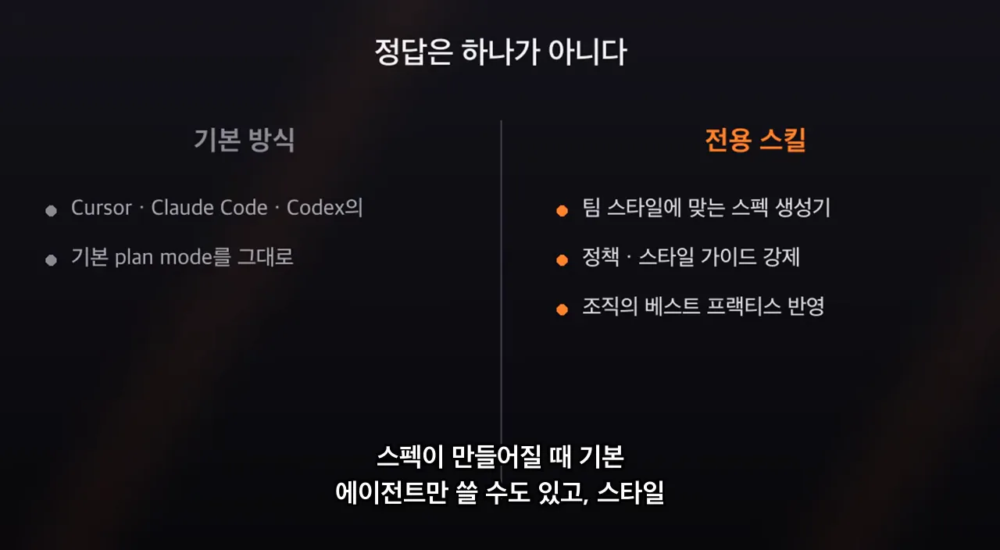
plan.md 하나로 넘길 수 있어야 해요
빌드는 엔지니어가 intent와 spec을 Claude Code나 Cursor의 플랜 모드에 그대로 넣는 데서 시작해요. 아래 세 칸이 그 흐름이에요. intent.md + spec.md가 plan mode를 거쳐 plan.md가 돼요.
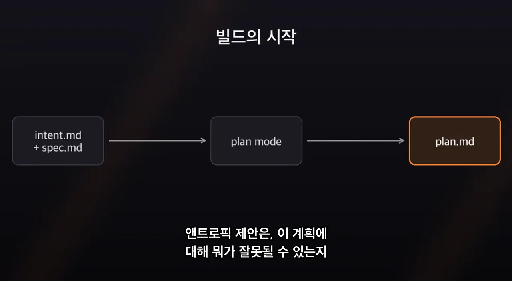
Anthropic은 이 계획에 대해 무엇이 잘못될 수 있는지 계속 캐물으라고 해요. 슬라이드 아래 회색 줄의 '계획을 심문하라'가 그 말이에요. 목표는 큰 글씨 그대로예요.
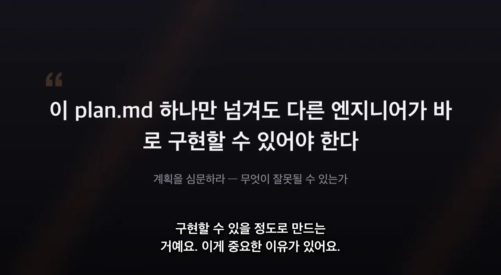
이게 중요한 이유는 한 에이전트가 SDLC 전체를 맡지 않기 때문이에요. 컨텍스트 윈도우에는 한계가 있고, 대화 스레드는 나뉘고, 독립된 에이전트와 서브 에이전트가 단계를 나눠 맡아요. 아래 슬라이드처럼 plan.md가 에이전트 1, 2, 3으로 차례로 넘어가도, 각자 이전 대화를 몰라도 문서만으로 시작할 수 있어야 해요. 단테의 워크플로에서도 여러 에이전트가 동시에 문제를 나눠 맡는대요.
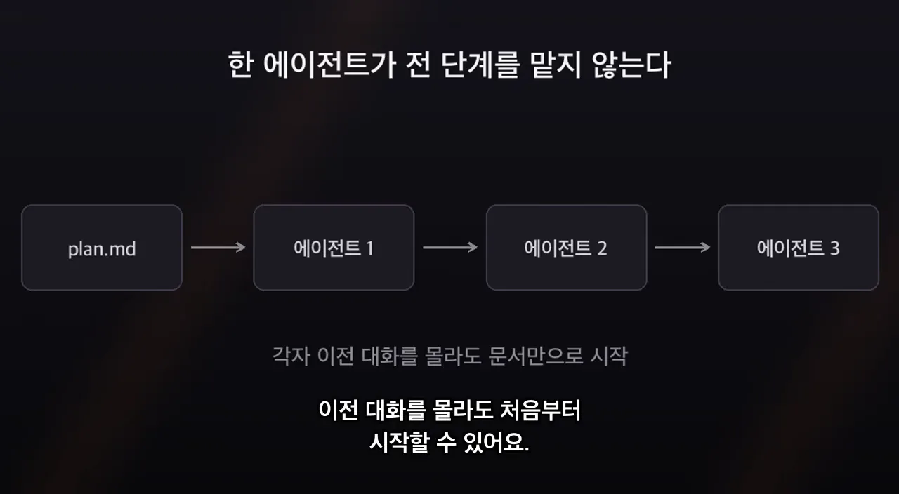
계획을 쓰는 방법은 많지만 들어가야 할 건 네 가지예요. 슬라이드 번호 순으로 바꿔야 할 파일들, 작업 순서와 할 일 목록, 리스크와 제약, 그리고 증명이에요. 4번 증명은 계획대로 됐는지 판정할 기준이에요. 린팅이나 테스트처럼 결과가 딱 정해지는 형태여야 해요.
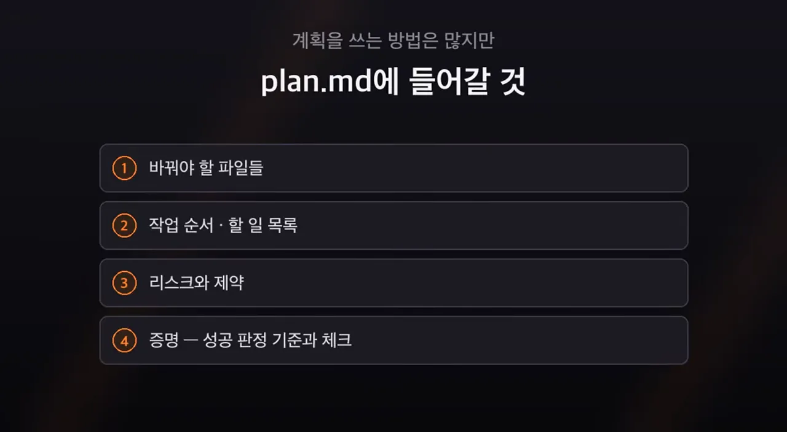
빌드: 거버넌스, 권한, 워크트리, 훅
규모 있는 조직이라면 거버넌스가 큰 몫을 차지해요. 아래 슬라이드의 세 줄처럼 intent·spec·plan의 버전을 기록하고, 누가 건드렸는지와 어떻게 바뀌었는지를 남겨요. 이걸 잘하는 회사는 많지 않대요. 하지만 AI가 워크플로에서 실제로 얼마나 효과를 내는지 숫자로 보여 주려면 꼭 필요해요.
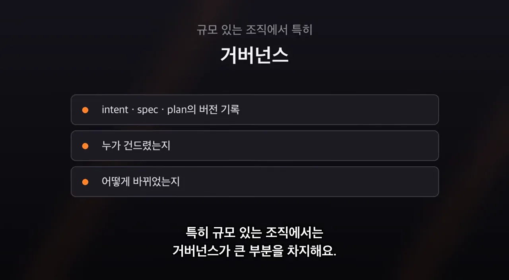
오토 모드보다 권한 설계가 먼저예요
빌드를 빠르게 하려고 Anthropic은 오토 모드를 권해요. 단테는 조직마다 다르다며 한 단계 앞을 권해요. 통제된 환경에서 시작해 권한을 세밀하게 조정하며 하나씩 승인해 가라는 거예요. 슬라이드의 세 질문, 곧 어떤 도구에 접근할 수 있는지, 어떤 웹 소스를 쓸 수 있는지, 어떤 패키지를 설치할 수 있는지에 대한 정책이 쌓이면 그대로 Cursor나 Claude Code의 권한 설정에 옮겨요. 그러면 사람이 계속 붙어 있지 않아도 에이전트가 훨씬 빨리 움직여요.
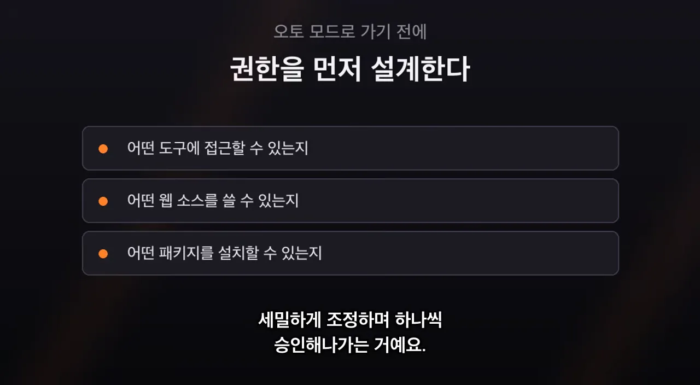
오토 모드를 매끄럽게 돌리려면 신경 쓸 게 많은데, 그중 하나가 블라스트 반경이에요. 아래 인용 슬라이드의 회색 줄 '권한을 하나씩 승인하며 넓혀 간다'가 방법이에요. 영상은 자세한 내용을 다음 영상으로 미뤄요.
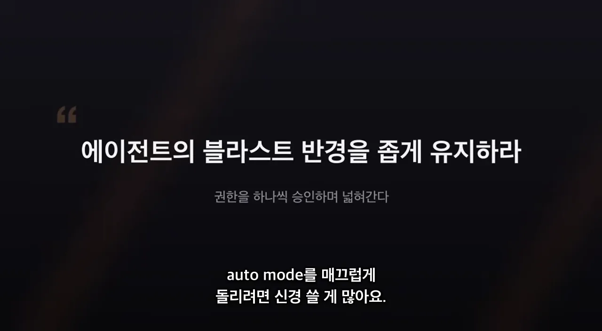
워크트리와 훅
Anthropic 팀은 Git 워크트리도 권해요. 슬라이드의 워크트리 1, 2, 3처럼 작업마다 따로 작업 공간을 두면 여러 에이전트가 동시에 다른 작업을 할 수 있어요.
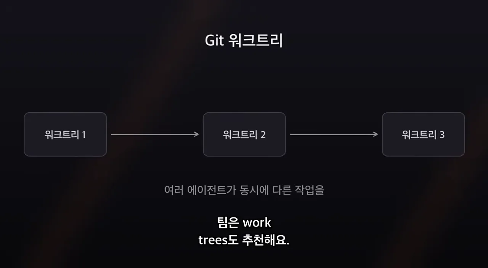
프로세스를 알아서 최신 상태로 유지하고 궤도 위에 붙잡아 두는 데는 훅이 큰 역할을 해요. 슬라이드의 세 줄이 예시예요. 구현이 끝나면 계획을 자동으로 업데이트하고, 특정 폴더는 건드리지 못하게 막고, 승인 안 된 npm 패키지는 업그레이드하지 못하게 해요. 린팅도 같은 편이에요. 오래된 개념이지만, 코드나 문서가 기준과 문법에 맞는지를 예/아니요로 딱 갈라 줘요.
좋은 에이전트 하네스는 서브 에이전트를 돌릴 수 있어요. Cursor, Claude Code, Codex에는 이미 들어 있어요. 아래 세 칸처럼 plan.md를 독립적으로 처리할 수 있는 작업으로 쪼개고, 서브 에이전트가 병렬로 실행해요. 병렬로 돌릴 부분은 워크트리를 써요. 결국 여러 에이전트와 서브 에이전트가 동시에 빌드를 진행하게 돼요.
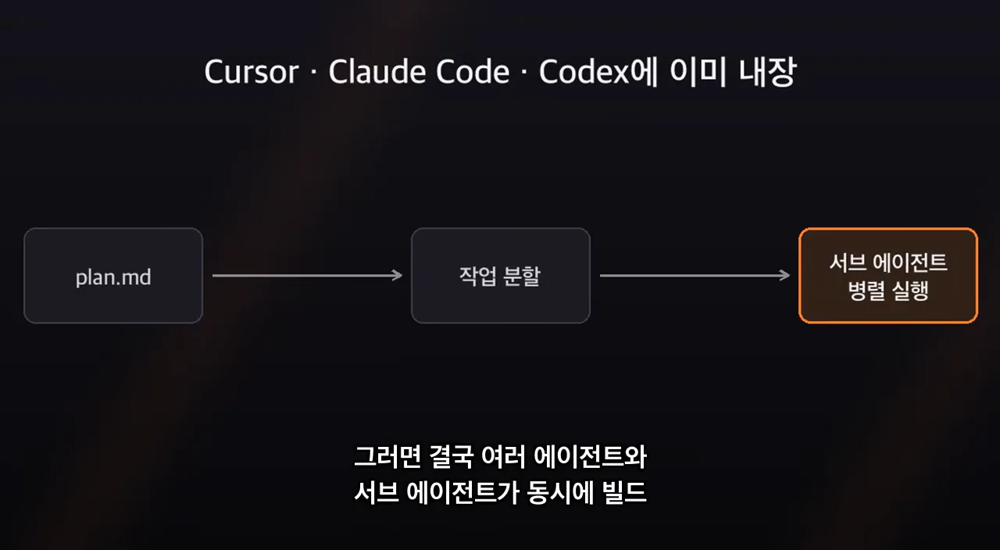
plan.md를 완결되게 쓰라고 한 이유가 여기서 드러나요. 쪼갠 작업을 받는 서브 에이전트는 문서만 보고 일하거든요. 영상 09:22에서 보기테스트와 배포도 에이전트가 먼저 봐요
전통적인 SDLC에서 테스트는 자주 발목을 잡았어요. 슬라이드 왼쪽처럼 작업을 개발 서버에 올려 두고, QA(Quality Assurance)가 봐 줄 때까지 며칠씩 기다리고, 피드백을 받아 고치는 사이클이 시간을 많이 먹었죠. 오른쪽 AI SDLC는 사람 엔지니어나 QA가 손대기 전에 에이전트가 최대한 테스트해 두는 쪽이에요. 빌드가 끝나면 테스트, 린팅, E2E(End-to-End) 리뷰로 바로 넘어가요.
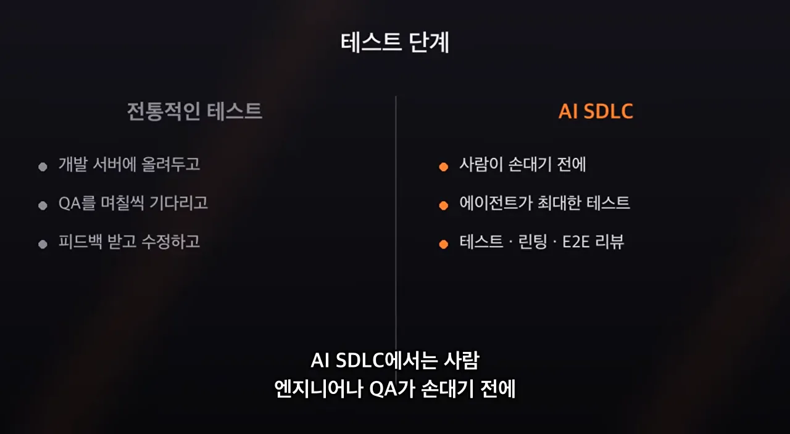
에이전트가 직접 하는 일은 네 가지예요. 슬라이드 번호대로 ① 테스트를 직접 써서 새 기능이 기존 기능을 깨뜨리지 않는지 확인하고 통과시켜요. ② 린트와 빌드로 에러가 없는지 봐요. ③ Playwright 같은 도구로 실제 화면을 테스트하고, ④ 스크린샷과 화면 녹화까지 남겨요. 영상은 Cursor 클라우드 에이전트가 서버를 직접 띄워 테스트하고 녹화까지 보여 주는 데 특히 강하다고 해요.
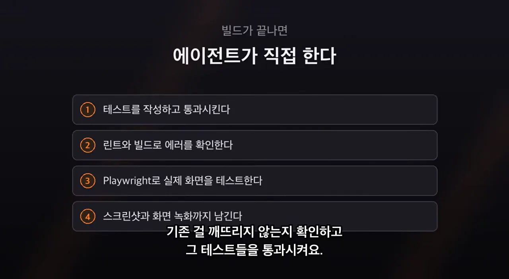
또 하나의 제안은 스킬이 바뀌거나 모델이 업그레이드될 때마다 eval을 돌리는 거예요. 영상은 최적화에 가깝다고 하면서도, 핵심은 지속적 통합 안에 상시 평가를 넣어 두는 거라고 해요. 슬라이드 세 칸처럼 이미 해결한 이슈 20개쯤과 각각의 기대 결과를 모아 두고, 새 모델이나 큰 변화가 생기면 돌려서 회귀가 없는지 확인해요.
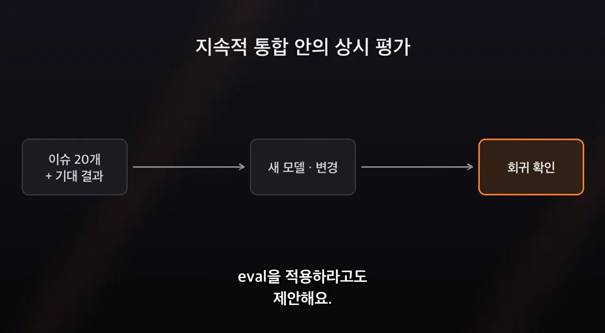
배포: 리뷰하는 쪽도 에이전트예요
사람 리뷰가 끝나면 에이전트에게 머지를 시키거나 메인 저장소에 PR을 만들게 해요. 에이전트는 자기 브랜치나 워크트리에서 작업을 끝낸 뒤 '이렇게 바꿨으니 확인해 달라'는 PR을 올려요. 아래 네 칸이 그 길이에요. 에이전트 브랜치 → Pull Request → Claude 리뷰 → 메인 병합. 주황으로 강조한 Claude 리뷰가 Anthropic의 제안이에요. CI(Continuous Integration)가 돌거나 PR이 생길 때마다 Claude가 들어와 정책과 보안 기준으로 리뷰하고, 이 모든 게 비동기로 돌아가요.
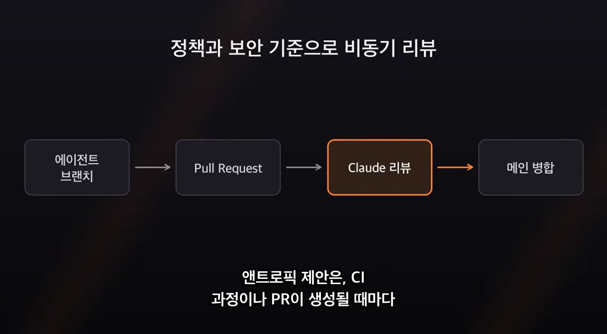
리뷰하는 에이전트는 PR에 '이건 못 받아들이겠다', '이 부분을 고쳐 달라' 같은 코멘트를 남길 수 있어요. 슬라이드의 첫 줄처럼 그 코멘트를 읽고 처리하는 Claude 인스턴스가 따로 있어요. 둘째 줄처럼 이 인스턴스는 어떤 agents.md, 어떤 스킬, 어떤 훅·린팅이 걸려 있는지에 따라 정책이 달라져요. 셋째 줄은 거버넌스 쪽이에요. 특정 권한, 특정 담당자의 승인, 릴리스 게이트를 통과해야만 배포되도록 훅을 걸 수 있어요.
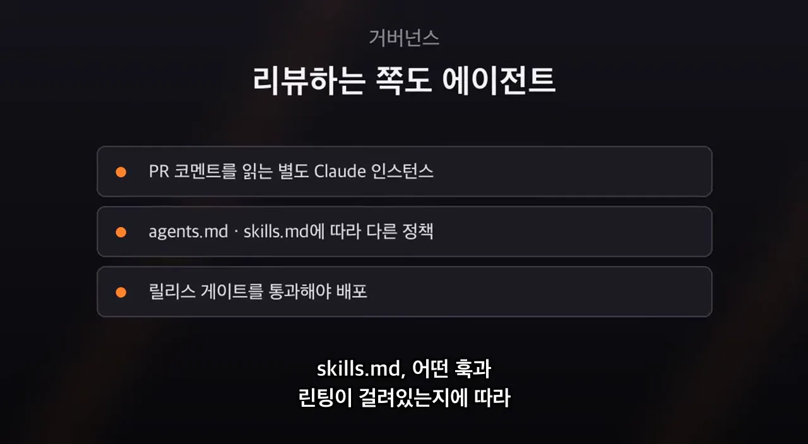
PR이 끝난 뒤에도 마지막 방어선이 있어요. 또 다른 에이전트가 보안 점검과 CI 리뷰를 돌려요. 린팅이나 게이트 체크처럼 결과가 딱 정해진 방식일 수도 있고, Cursor의 Bugbot이나 Claude 보안 리뷰 같은 에이전트가 들어와 에러를 찾을 수도 있어요.
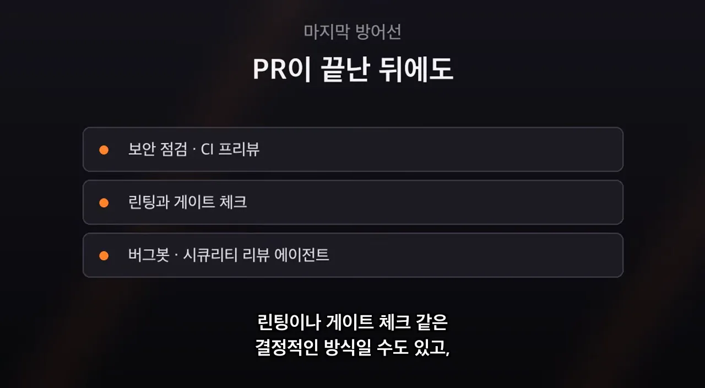
유지보수, 그리고 정답은 하나가 아니에요
마지막은 유지보수예요. 단테는 이 부분이 워크플로 전체에서 가장 이상적이고 야심찬 지점이라고 봐요. 아래 슬라이드는 처음의 원형 그림과 같은 모양인데, 가운데가 SDLC에서 Claude로 바뀌었어요. 계획·설계·빌드·테스트·배포를 거쳐 왼쪽 위 주황 칸, 유지보수에 도착했다는 뜻이에요.
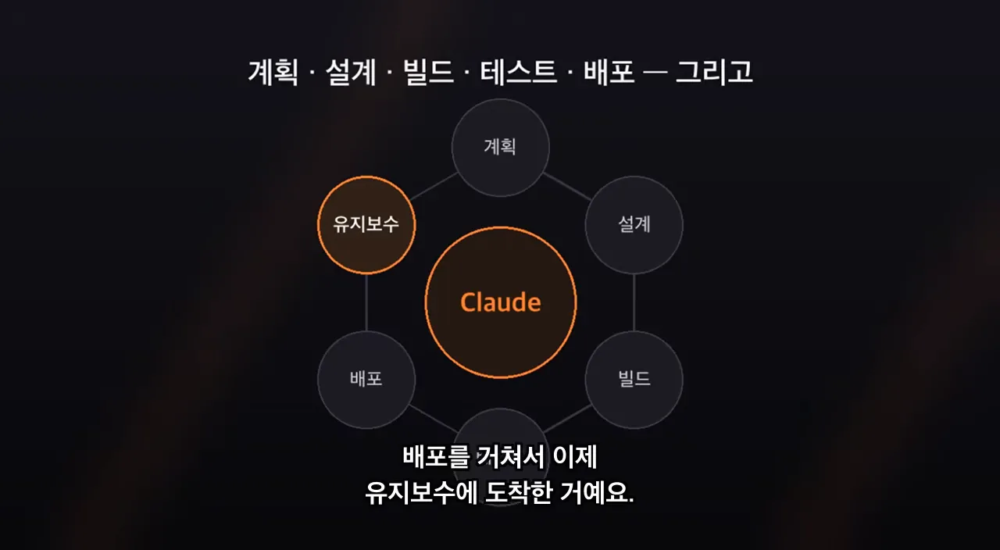
전통적인 유지보수는 반응적이었어요. 슬라이드 왼쪽처럼 새벽 3시 서버 장애 알림, 온콜 당번 대응, 백로그에 쌓인 채 방치되는 티켓이 전형이에요. 오른쪽 AI SDLC에서는 장애, 새 티켓, Slack 메시지, 정해진 스케줄이 사람 없이 바로 Claude를 불러요. Claude는 비동기로 진단하고 조치에 들어가요.
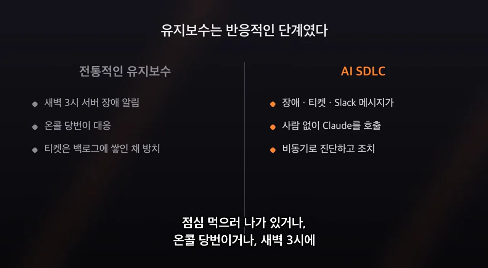
이때 Claude는 고치기만 하지 않아요. 아래 세 칸의 마지막처럼 자기가 찾은 로그나 받은 티켓을 바탕으로 intent.md를 스스로 만들어요. 이 문서가 다시 계획 단계의 입력이 되니, 사이클이 사람 없이 한 바퀴 다시 돌기 시작해요.
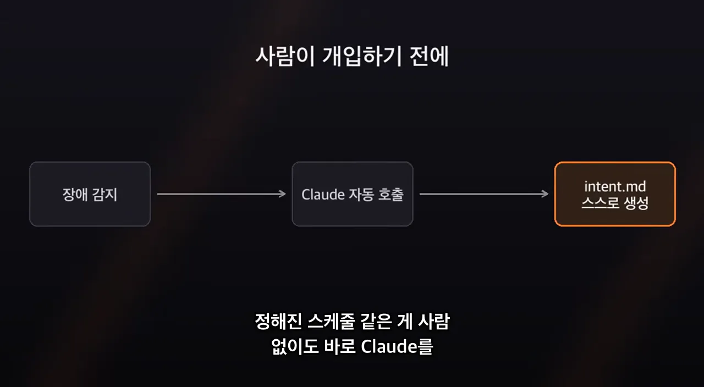
intent.md를 유지보수 단계에서는 에이전트가 써요. 영상 12:53에서 보기가장 이상적인 모습은 지켜야 할 지표를 정해 두는 거예요. 슬라이드의 '지표 이탈 → 원인 진단 → 해결 방안 제시'가 그 흐름이고, 회색 줄에 예시가 있어요. 테스트 중에 페이지가 죽거나 API(Application Programming Interface) 요청 제한이 갑자기 늘면, 그게 에이전트를 깨워 문제를 진단하고 intent를 만들게 해요. 사람이 컴퓨터 앞에 앉기도 전에 몇 가지 해결안까지 나와 있어요.
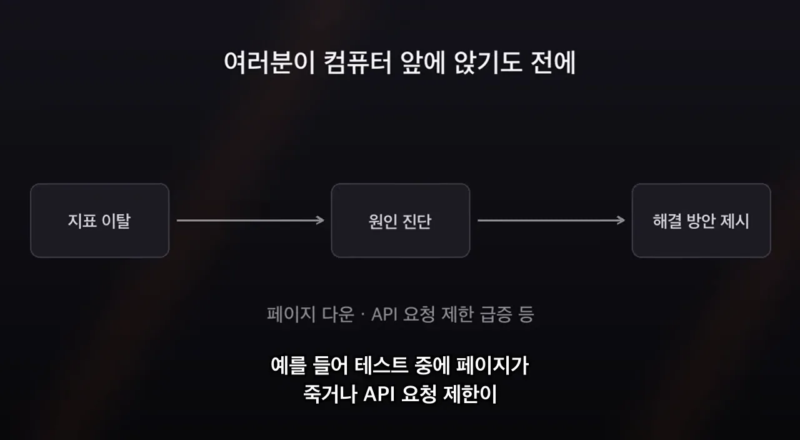
여섯 단계를 한 표로
영상이 단계마다 보여 준 전통 방식과 AI 방식을 한 표로 모았어요. 설계 단계는 영상이 따로 비교하지 않아서 스펙 이야기로 채웠어요.
| 단계 | 예전에는 | AI 네이티브에서는 | 남는 문서 |
|---|---|---|---|
| 계획 | 요구사항 수집, 문서, 워크숍, 이해관계자 회의 | 에이전트가 나를 인터뷰하고 정리 | intent.md |
| 설계 | — | 훅·자동화로 스펙 자동 생성, 정책 스킬 적용 | spec.md |
| 빌드 | 시간과 비용이 가장 많이 드는 구간 | 플랜 모드로 계획, 서브 에이전트가 워크트리에서 병렬 빌드 | plan.md, 코드 |
| 테스트 | 개발 서버에 올리고 QA를 며칠 기다림 | 에이전트가 테스트·린트·화면 테스트, 상시 eval | 테스트, 스크린샷 |
| 배포 | — | Claude가 PR을 정책·보안 기준으로 리뷰, 훅으로 릴리스 게이트 | PR |
| 유지보수 | 새벽 장애 알림, 온콜, 방치된 티켓 | 장애·지표 이탈이 Claude를 호출, 진단 후 새 intent 작성 | 새 intent.md |
사람은 어디에 남을까요
영상은 이 문서의 전제를 한 문장으로 모아요. 에이전트를 빌드에서만 쓰지 말고 SDLC 전체에 참여시키자는 거예요. 아래 인용 슬라이드가 그 질문이에요. 각 단계에서 사람이 쓰는 시간은 줄이되, 정말 중요한 리뷰에는 여전히 사람을 남길 수 있을까요. 회색 줄처럼 그 비율은 팀과 위험도에 따라 달라요. 위험이 낮으면 에이전트만 돌려도 돼요.
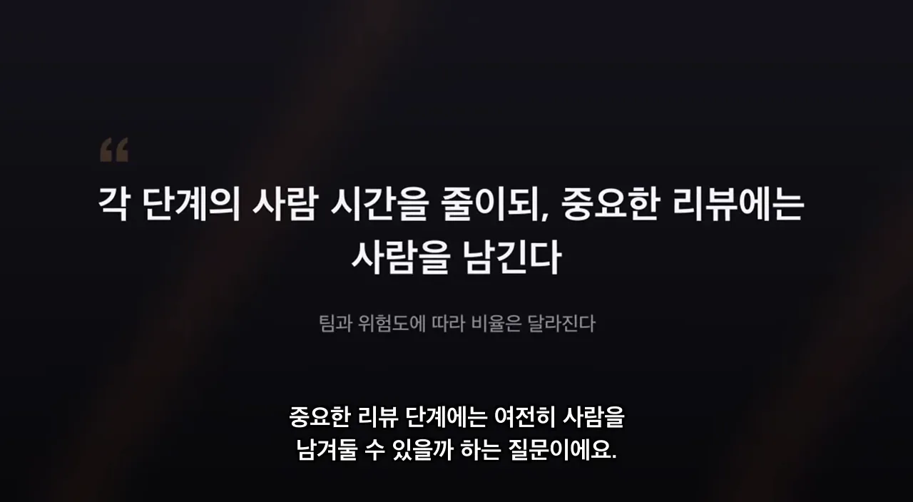
단테는 여러 회사와 AI SDLC를 만들어 보니 정답이 하나가 아니더라고 말해요. 슬라이드 첫 줄처럼 이미 Superpowers나 BMAD(Breakthrough Method for Agile AI-Driven Development) 같은 방식을 쓰거나 자기만의 버전을 만들어 뒀다면, 그걸 버리고 Anthropic 방식으로 갈아탈 필요는 없어요. 나머지 세 줄은 접근법의 폭이에요. 단순한 루프부터 그래프 엔지니어링과 완전 자동화된 루프, 대규모 오케스트레이션까지 있어요. 플랜 모드 정도로 단순하게 쓰든 바이브 코딩으로 가든 괜찮다고 해요.
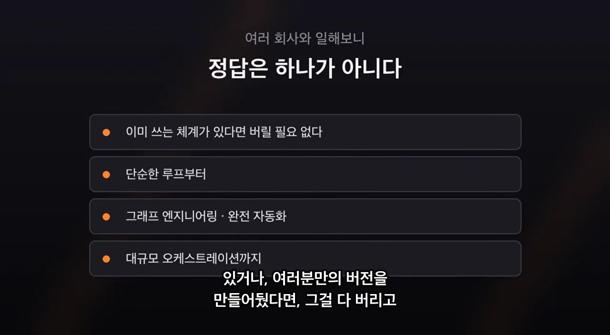